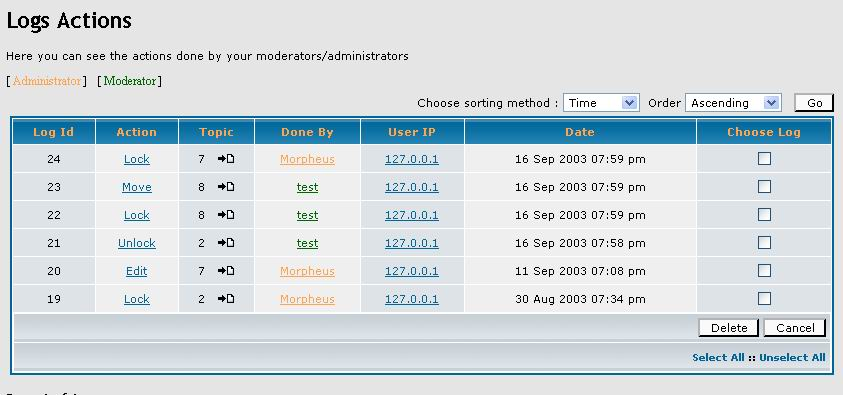

|
Log Actions MOD User Guide
written by Morpheus (2003/09/16) |
- Introduction
- Features List
- Installation
- Installed the MOD with EasyMOD
- Installed the MOD yourself
- Installed the MOD using the pre-modified files
- Uninstallation
- The Log Actions MOD
- The Logs
- Configuration/Utilization of the MOD
- Copyright and Disclaimer
1. Introduction
This Guide have been written to help you to understand how work the Log Action MOD. It will also try to explain how to install it and how to use the different features of the MOD. Like Log Action MOD is still in development, i will try to keep this document up-to-date.
If you need more help on the Log Actions MOD, or if you have feature requests, you can post them at http://morpheus.2037.biz or at the following thread : http://www.phpbb.com/phpBB/viewtopic.php?t=73523 on phpBB.com. They are the two only officials site for the Log Actions MOD Support.
Thanks for your support.
Morpheus.
2. Features List
Here is a list of the Log Actions MOD features :
- All actions logged :
All the possible actions done by your administrators/moderators throught the Moderator Control Panel are logged. Editing a post is also logged.
- Possibilities to delete one or more than one log.
- A prune function of the logs can be used
- A explanation of the actions is given in a pop-up if you click on the name of one of these.
- Admin Panel Part :
- See all the logged actions.
- Specify if all administrators can see the logs.
- You can choose which administrators can see or not the logs.
- Complete installer script for modify your database.
- An uninstaller can be used to undo the changes done to the database.
- Language Packs :
For the moment, only English Language is supported. If you want to be a translator of the Log Actions MOD, post your translated files at the Log Actions MOD Support Forum
- Database-support: mysql, mysql4, postgresql (need testers for this one)
3. Installation
3.1 Installed the MOD with EasyMOD
To install the Log Actions MOD by using EasyMod, it's very simple : upload all the files of the MOD into a directory called log/ onto your EasyMod directory. So the complete full path should be : phpBB/admin/mods/log/. Once this is done, go into your administration panel, and clic on the link "Install MODs" under MOD Center. Then, follow the instructions given by EasyMod, but don't forget to run the file log_actions_db_update.php and then, delete it immediately !
3.2 Installed the MOD yourself
Installing the MOD yourself is not really hard because there is not a lot of modifications to do in the phpBB core files.
To install the MOD, you've just to follow the instructions wich are written in the file docs/Install_log_action_mod.txt.
For example, in this file, you will find :
#
#-----[ OPEN ]------------------------------------------------
#
modcp.php
#
#-----[ FIND ]------------------------------------------------
#
include($phpbb_root_path . 'includes/functions_admin.'.$phpEx);
#
#-----[ AFTER, ADD ]------------------------------------------
#
// Log actions MOD Start
include($phpbb_root_path . 'includes/functions_log.'.$phpEx);
// Log actions MOD End
|
What does that mean ? Very simple ;-) In fact, this part of code explain you what you have to do for modified the file.
So, if you follow the instructions correctly, you need to open the file modcp.php, find a part of code and then, add another part of new code after the first one, so your final code will be :
include($phpbb_root_path . 'includes/functions_admin.'.$phpEx);
// Log actions MOD Start
include($phpbb_root_path . 'includes/functions_log.'.$phpEx);
// Log actions MOD End
|
This is a basic action for modding the file. Once you've done ALL the modifications in ALL the files, don't forget to run the file install_tables.php and then, delete it immediately !
Here is a tutorial on "How-To Install a MOD" :
The first thing to do before all, is to backup your files and your database.
Then, open the install file of the MOD and see what is written (it's depend of the MOD you are trying to install) :
1) The "COPY" action :
If in a MOD, you see something like that :
#
#-----[ COPY ]------------------------------------------
#
file.php -> phpBB/
file.tpl -> phpBB/templates/subSilver/
|
This just mean that you have to upload the file "file.php" into the phpBB root dir, and the file "file.tpl" into the template directory, directly without modify them.
2) The "OPEN" action :
This is the first basic action to do :
#
#-----[ OPEN ]------------------------------------------
#
common.php
|
Not hard to do : open the specify file into a text editor (notepad, wordpad, editplus,......)
3) The "FIND" action :
After the "OPEN" action, it's the most used.
#
#-----[ FIND ]------------------------------------------
# around line 184
//
// Show 'Board is disabled' message if needed.
//
|
After you have opened a file in your text edit editor, search for what the MOD say to search.
4) The "BEFORE ADD" action :
In the install file, you should see :
#
#-----[ BEFORE, ADD ]--------------------------------------
#
include($phpbb_root_path . 'attach_mod/attachment_mod.'.$phpEx);
|
so, after you hav find the code to search, add before what the MOD say to add. In my example, the result will be :
include($phpbb_root_path . 'attach_mod/attachment_mod.'.$phpEx); // -> Test to add before
//
// Show 'Board is disabled' message if needed. -> Text to search
//
|
5) The "AFTER ADD" action :
#
#-----[ AFTER, ADD ]------------------------------------------
#
include($phpbb_root_path . 'attach_mod/attachment_mod.'.$phpEx);
|
It's the same thing of the "BEFORE" action, but instead of adding your code before the text to search, you have to add it [u}after
Example :
include($phpbb_root_path . 'language/lang_' . $board_config['default_lang'] . '/' . $lang_file . '.' . $phpEx); // -> Text to search
include($phpbb_root_path . 'attach_mod/attachment_mod.'.$phpEx); // -> Test to add after
|
6) The "REPLACE WITH" action :
#
#-----[ REPLACE WITH ]------------------------------------------
#
include($phpbb_root_path . 'language/lang_' . $board_config['default_lang'] . '/' . $lang_file . '.' . $phpEx);
|
This action is always used with the "FIND" action. I mean : you have a code to search, then the code to used instead of the previous code.
But you have to be careful with this action if you have others MOD's installed on your forum.
Example :
#
#-----[ FIND ]---------------------------------------------
# around line 225
include($phpbb_root_path . 'language/lang_' . $board_config['default_lang'] . '/' . $lang_file . '.' . $phpEx);
#
#-----[ REPLACE WITH ]---------------------------------------
#
include($phpbb_root_path . 'language/lang_' . $board_config['default_lang'] . '/lang_admin.' . $phpEx);
|
In this example, i have to search for (This is in my original file) :
include($phpbb_root_path . 'language/lang_' . $board_config['default_lang'] . '/' . $lang_file . '.' . $phpEx);
|
and to remplace by (This will be in my modded file) :
include($phpbb_root_path . 'language/lang_' . $board_config['default_lang'] . '/lang_admin.' . $phpEx);
|
so, in my modded file, i will have :
include($phpbb_root_path . 'language/lang_' . $board_config['default_lang'] . '/lang_admin.' . $phpEx);
|
7) The "IN-LINE FIND" action :
This is, with the "IN-LINE AFTER, ADD" and "IN-LINE BEFORE, ADD" actions (see the next actions), the best action to use by the MOD's authors (i think that but it's just my opinion).
This action is, again, always used with the "FIND" action
#
#-----[ IN LINE FIND ]------------------------------------------
#
t.topic_title,
|
Like it's a little hard to understand like this, i give you a example
Example :
#
#-----[ FIND ]------------------------------------------
#
$select_sql = ( !$submit ) ? ", t.topic_title, p.enable_bbcode, p.enable_html, p.enable_smilies, p.enable_sig, p.post_username, pt.post_subject, pt.post_text, pt.bbcode_uid, u.username, u.user_id, u.user_sig" : '';
#
#-----[ IN LINE FIND ]------------------------------------------
#
t.topic_title,
|
You have just to search for " t.topic_title, " and to prepare you for the action which will arrive.
8 ) The "IN LINE AFTER ADD" action :
Looks like this :
#
#-----[ IN LINE AFTER ADD ]------------------------------------------
#
t.topic_desc,
|
In fact, it's a better way to use the "REMPLACE" action (in the case that you have others MOD's installed)
This action is used with the "FIND" action and the "IN LINE FIND" action.
Example :
#
#-----[ FIND ]------------------------------------------
#
$select_sql = ( !$submit ) ? ", t.topic_title, p.enable_bbcode, p.enable_html, p.enable_smilies, p.enable_sig, p.post_username, pt.post_subject, pt.post_text, pt.bbcode_uid, u.username, u.user_id, u.user_sig" : '';
#
#-----[ IN LINE FIND ]------------------------------------------
#
t.topic_title,
#
#-----[ IN LINE AFTER ADD ]------------------------------------------
#
t.topic_desc,
|
Here, you have to search for an entire line (original line) :
$select_sql = ( !$submit ) ? ", t.topic_title, p.enable_bbcode, p.enable_html, p.enable_smilies, p.enable_sig, p.post_username, pt.post_subject, pt.post_text, pt.bbcode_uid, u.username, u.user_id, u.user_sig" : '';
|
in this line, you have to search something :
and to add that, directly after :
so your line will become (modded line) :
$select_sql = ( !$submit ) ? ", t.topic_title, t.topic_desc, p.enable_bbcode, p.enable_html, p.enable_smilies, p.enable_sig, p.post_username, pt.post_subject, pt.post_text, pt.bbcode_uid, u.username, u.user_id, u.user_sig" : '';
|
9) The "IN LINE BEFORE ADD" action :
It's the same thing that the "IN LINE AFTER ADD" action but you have just to add the code before what you have to search instead of after.
#
#-----[ IN LINE BEFORE, ADD ]------------------------------------------
#
, $topic_desc
|
Example :
#
#-----[ FIND ]------------------------------------------
#
prepare_post($mode, $post_data, $bbcode_on, $html_on, $smilies_on, $error_msg, $username, $bbcode_uid, $subject, $message, $poll_title, $poll_options, $poll_length);
#
#-----[ IN LINE FIND ]------------------------------------------
#
$poll_length)
#
#-----[ IN LINE BEFORE, ADD ]------------------------------------------
#
$topic_desc,
|
You have to search for an entire line (original line) :
prepare_post($mode, $post_data, $bbcode_on, $html_on, $smilies_on, $error_msg, $username, $bbcode_uid, $subject, $message, $poll_title, $poll_options, $poll_length);
|
in this line, you have to search :
and to add that, directly before :
so your line will become (modded line) :
prepare_post($mode, $post_data, $bbcode_on, $html_on, $smilies_on, $error_msg, $username, $bbcode_uid, $subject, $message, $poll_title, $poll_options, $topic_desc, $poll_length);
|
10 ) The "SQL" action :
This is the action to do for altering the database(adding a fiels, a table,...).
#
#-----[ SQL ]------------------------------------------
#
ALTER TABLE phpbb_topics ADD topic_desc varchar(255) DEFAULT '' AFTER topic_title
|
The best way for you to do this action is to use a basic management tool of database via Internet, like phpMyadmin
Once you have installed phpMyadmin, it's simple :
go into it, clic on the name of your database on the left. On the right, you will see a blank textarea : copy and paste the SQL query to do into this area, then clic on "Execute" and see the result
11) The "SAVE/CLOSE ALL FILES" action :
This is the last action. Once you have done all your modifications, save and close your files, thn upload tem onto your ftp server and go in your forum : see the result of your job.
But don't forget : before all, backup your files and your database.
I hope this tutorial will help you ;-)
|
3.3 Installed the MOD using the pre-modified files
Very simple, this method can be used by those who didn't want to install the MOD by editing the files themself. But be careful if you have others MOD's installed on your forum : this way will replace some files so if you have differents MOD's which need to altered this files, this MOD's should stop to worked.
To install the MOD by using the pre-modified file, just upload the files which are in the contrib/ folder on your FTP. After that, don't forget to run the file install_tables.php and then, delete it immediately !
4. Uninstallation
For uninstalling the MOD, you have just to follow this instructions :
- Delete the files that you've uploaded for the MOD.
- Undo the modifications tht have been made in the files during the installation of the MOD.
- Run the script log_actions_uninstall_tables.php (and then delete it immediately) or delete, with phpMyadmin or your shell access to your database, the tables which have been created for the MOD : phpbb_logs and phpbb_logs_config.
That's All.
5. The Log Actions MOD
5.1 The Logs
Here is the screen that you get in the Log Action part of your Admin Control Panel

Like you can see, the MOD will allow you to log the action that have been done by the admin or moderator, the address IP of the one who execute the action and the topic ID of the topic where the action have been executed.
The name of the admin or moderator is display in color to give you the possibility to more find which level has this user.
If you click on the name of an action, you will get a pop-up that will give you some informations on what is this action and what it does.
Here, you have also the ability to delete the logs, or to sort them.
5.2 Configuration/Utilization of the MOD
This is the configuation part of the MOD :
Configuration of the Log
Here, you will be able to configure some options of the Log Actions MOD.
Ok, let's stat the explanations ;-)
The first line allow you to give the permissions to all the others admins to see the logs and to modify the configuraion of the Log Actions MOD.
The two other lines are useful only if you choose to disable the first line. Indeed, with this two one, you can choose which Admin will be able to see the logs and to modify the configuration. You can also to choose an username that you no longer want to allow to do some modifications on the Log Action MOD config or to see the logs.
Finally, the last part allow you to prune the logs : this work on the same system as the prune function of the forum of phpBB. Enter a number of days and then, click on the button "Prune !". This will delete all the log which have been created before the x last days (x = number of days you've entered).
6. Copyright and Disclaimer
- This Guide have been written by Morpheus, author of the Log Actions MOD. This Application (Log Action MOD) is OpenSource Software, released under the GPL.
This Document is Copyright © 2003 Morpheus, All Rights Reserved.
- Some parts of this document are taken from the Attachment Mod User Guide of Acyd Burn. The template have been written by subBlue design for the forum phpBB. Thanks to them for what they have done.
|